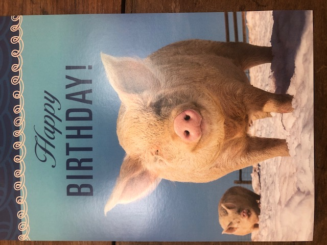

Rosie

I met Rosie as a puppy on E. 3 St in 1990. She was my first dog and she died in San Diego, in a vet’s office, in 2006. I started writing about her when she began to die and I kept it up until spring of 2015 and finished the book in Marfa. I joke that I am now a dog biographer but in fact it is true. The book is as fantastic (and I mean realm, not quality) as Rosie was so I have written a dog memorial and I urge you to go there now and read about her, a wise, soulful, great great dog. And more.
Honey
The biggest news with this girl is that she I think in the aftermath of running with the bulls in 2017 she tore her ACL (it’s a ligament) meaning she had to come home from Marfa and get surgery in New York where the great Dr. Amy Kantor took care of her. It was a quick recovery but still her knee’s a little stiff. And with these kinds of things it usually triggers another leg to tear since the weight goes somewhere else too much. While she was healing her dogfather, Joe Proulx, was relaxing with her outside a café and she saw a dog that made her feel something and so even though she was tied up she managed to yank herself free and bit a dog named Butters. If you look under ‘Art’ on this site you will see a poem ‘Mary Queen of Scots’ that deals with this incident. Butters’ owner is a vet and accordingly was understanding about dog feelings but still Butters needed medical attention. Cost a fuck of a lot. More recently Honey is in Marfa where a dog named Jolene took a dislike to Honey and bit her on the ear and she had to get stitches and I hear she’s doing fine. She is. I was just there. Mel Elberg was there with her when she got bit. She’s very lucky since she has great people taking care of her when I’m not in Marfa which is mostly and when she’s not in New York. My ‘owning’ Honey is a bit like Ulysses which I always think of. When I come home she knows me and that’s entirely the point. I love this dog.
Ernie

When I drove to El Paso in October ERNIE (the cat Rosie and I lived with in San Diego -- we mourned Rosie together, and briefly Ernie & I lived together in New York before he said enough is enough) turned up and we had a tiny reunion. He’s aging and Bobby and Lee Byrd who he now lives with say he’s no longer top cat in the neighborhood, loses some fights. For his pleasure he defiantly likes to lie down and sprawl in the middle of the street, in the evenings, mainly, which so far is okay. All my animals like to live on the edge.
I take refuge in Ernie our black cat.
by Bobby Byrd
He head-butts my left elbow.
Nuzzles up against me.
He won’t go away until I pet him.
He lies down beside me.
Black fur thick and shiny, his flesh so relaxed.
At peace.
I know why.
This morning in the backyard
a white-winged dove—
some feathers, a wing, an empty corpse,
the head was gone.
Hunting is what Ernie does.
This is the way he serves the universe.
He stalks the wilderness of neighborhood darkness.
Ernie finally settles in against my thigh,
my hands return—right hand cupped in my lap,
left hand atop the right, thumbs lightly touching—
my back straight, shoulders relaxed
and I vow to understand through my body
the incommensurate awakened mind.
more Ernie poems by Bobby Byrd (pdf)
Pigs

Pigs are real. In a very brief period of time I have a read a piece a friend posted on twitter that says that Pigs are even smarter than we thought. Thus, I’ve begun to always capitalize Pigs to genuflect to what I am learning about them. They used to be smarter than a five-year old and I think now they are up to seven. I can’t remember how many words they can learn. This is not a research paper. But they can for instance recognize someone by the back of their head. I imagine a pig in a slaughterhouse looking at the back of some mean guy’s head and thinking whatever the Pig version of ‘asshole’ is. I used to think PETA was so extreme but now I give them money regularly and watch every nasty video they share. There are so many about pigs. I can’t list the depravities that occur in the places they are killed, the places they are stored in tiny crates, and by stored I mean the places they live their lives. The way young Pigs are barbarously castrated, ripped from their moms, so many heinous things happen to these brilliant little guys and I can only puzzle about the meaning or purpose of their intelligence in a life that either short or long is most likely spent being treated miserably and then slaughtered unconsciously as if whatever fragrant transient thing life is which Pigs do have occurred to a stone and not a fat miracle who no more wants to be eaten than I do. Why are Pigs smart. That is the question my brain has latched onto and won’t let go of. I don’t mind if a sentence ends in a preposition. I see it coming and know that it’s probably not supposed to happen. What I do is I lean on the sound in my head of ‘of.’ And make it more dramatic like ‘ov.’ Like the regional ‘uv’ ‘uv’ my birth is not regulated by the norms of written grammar. And there, my ‘of’ is safe and I wish I could imagine a similar operation for Pigs that could leave them in a safe place - their own Pig vernacular where their intelligence and their mysteriously desirable fat is enough and is simply there, alive in its own sweet condition.